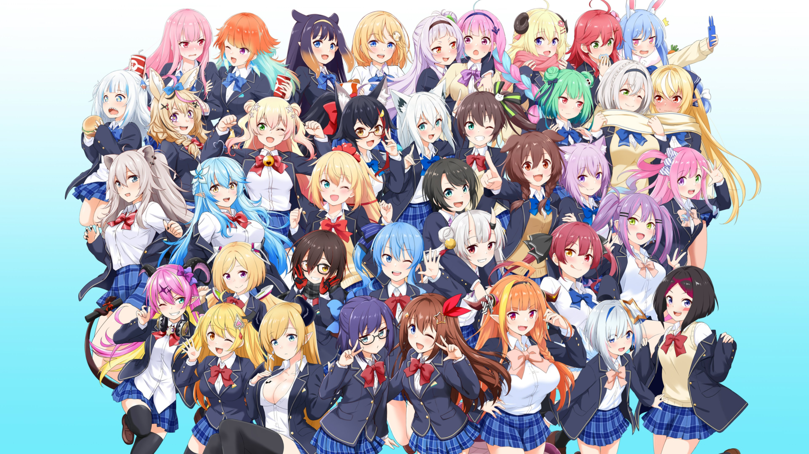
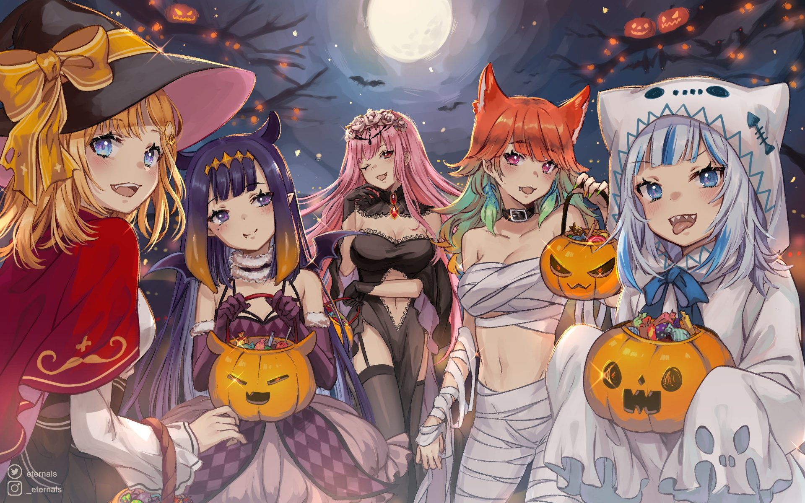
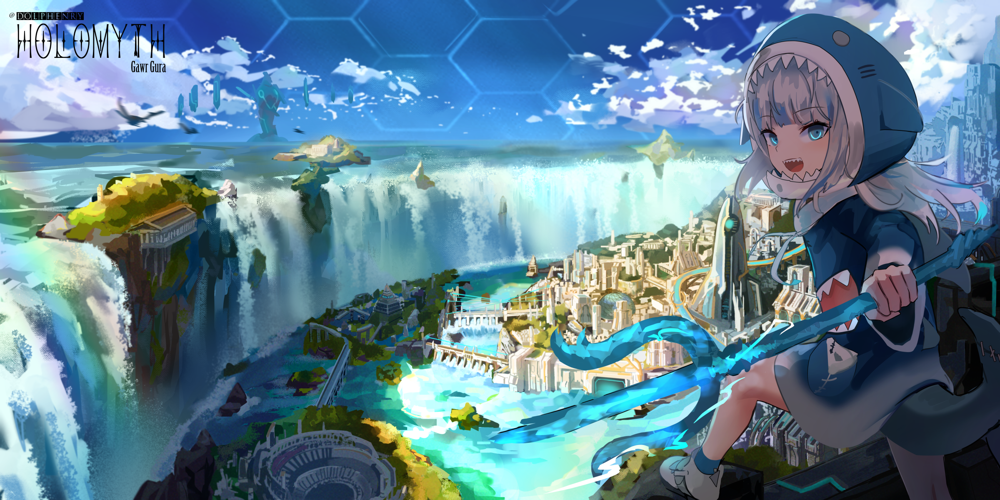

WELCOME
TO MY
WEBSITE
This website is my own project and I hope you enjoy with it.
All information about my favorite character is below!


This website is my own project and I hope you enjoy with it.
All information about my favorite character is below!

Gawr Gura is an English Virtual Youtuber associated with Hololive Production, debuting as part of its English (EN) branch first generation of VTubers alongside Ninomae Ina'nis, Takanashi Kiara, Watson Amelia and Mori Calliope.
Stream live on September 13th, 2020 with 4,527,151 views up to now.
Gura is a descendant of the Lost City of Atlantis, who swam to Earth while saying "It's so boring down there LOLOLOL!" She bought her clothes (and her shark hat) in the human world and she really loves them. In her spare time, she enjoys talking to marine life.

- Gura's debut stream was scheduled for 12th September 2020 at 2PM PDT, although she was 12 minutes and 32 seconds late to her own debut stream due to a technical issue. She was the fourth of the five original members of hololive English to debut on the same day. Over 45,000 viewers tuned into watch the event, in which she wowed viewers with a rendition of Tatsuro Yamashita's 1980 city pop single Ride on Time.

- Gura quickly rose in popularity, becoming the fastest-growing VTuber ever, gain 100,000 new subscribers every two to five days. On 20th October 2020, just after 37 days she became the #1 most subscribed hololive VTuber on Youtube. On 30th November 2020, Gura reached 1,500,000 Youtube subscribers. Up to now, she has got 3.53M subscribers and she also had 1 super successful song cover with Mori Calliope.